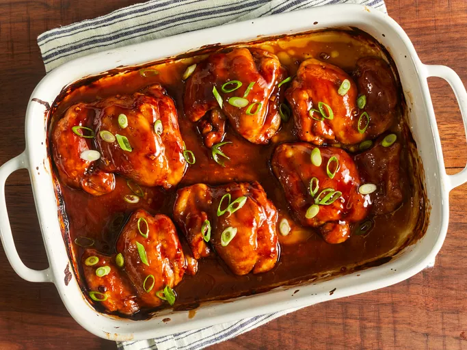

Teriyaki Chicken
Description
If you need a recipe that will have everyone running to the table, then try this Baked Teriyaki Chicken. This teriyaki chicken is made with simple ingredients that you probably already have on hand and it's so incredibly easy to make in the oven.
Ingredients
- ½ cup white sugar
- ½ cup soy sauce
- ¼ cup cider vinegar
- 1 tablespoon cornstarch
- 1 tablespoon cold water
- 1 clove garlic, minced
- ½ teaspoon ground ginger
- ¼ teaspoon ground black pepper
- 12 boneless, skinless chicken thighs
How to make Teriyaki Chicken
